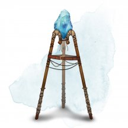
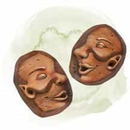
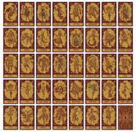
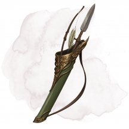
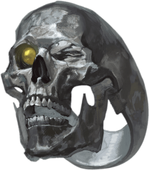
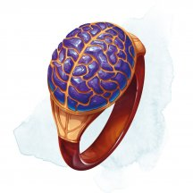
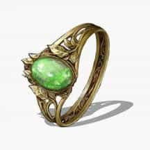
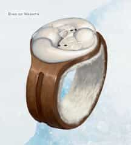
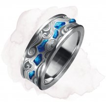
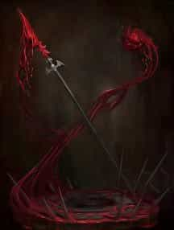

- Чудесный предмет, необычный
- Рекомендованная стоимость: 101-500 зм
Это перо с изумрудным наконечником, не требующее чернил для письма. Держа это перо, вы можете неограниченно накладывать невидимое письмо [illusory script], без использования материальных компонентов.
Магические предметы
Официальные материалы от Wizards of the Coast и от издательств, поддерживаемых этой компанией.
- Чудесный предмет, необычный
- Рекомендованная стоимость: 101-500 зм
Инфернальная головоломка представляет собой кубический контейнер с размером стороны от 5 до 6 дюймов, состоящий из герметичных, взаимосвязанных частей, изготовленных из материалов, найденных в Девяти Преисподних. Большинство этих головоломок сделаны из адского железа, хотя некоторые вырезаны из кости или рогов. Инфернальные головоломки используются для защиты дьявольских контрактов, подписанных между дьяволами и смертными, даже после того, как условия этих контрактов выполнены. Пустая инфернальная головоломка весит 3 фунта, независимо от материалов, используемых для её изготовления.
Когда достаточно маленький предмет способный поместиться в неё, помещают в головоломку, она магическим образом запечатывается вокруг объекта, и никакая магия не может заставить головоломку открыться. Запечатанная головоломка также становится невосприимчивой к любому урону. Каждая инфернальная головоломка создаётся с уникальным способом её открытия. Хитрость в решении головоломки всегда обычная и никогда не волшебная. Как только существо узнает хитрость или последовательность действий, необходимых для открытия конкретной инфернальной головоломки, оно может действием открыть головоломку и получить доступ к её содержимому.
Существо, которое проводит 1 час, за исследованием инфернальной головоломки, в попытках открыть её, может совершить проверку Интеллекта (Расследование) Сл 30. Если проверка успешна, то существо узнаёт хитрость или последовательность действий, необходимых для открытия головоломки. Если проверка проваливается на 5 и более, существо должно совершить спасбросок Мудрости Сл 18, получая 42 (12к6) урона психической энергией при провале и вдвое меньше урона при успехе.
- Чудесный предмет, необычный (требуется настройка)
- Рекомендованная стоимость: 101-500 зм
Этот полированный агат кажется камнем удачи [stone of good luck] всем, кто пытается его идентифицировать, и он имеет свойства этого предмета, пока находится у вас.
Проклятие. Этот предмет проклят. Пока он находится у вас, вы получаете штраф -2 на проверки характеристик и спасброски. Пока проклятие не обнаружено, Мастер тайно применяет этот штраф к броскам, к которым вы добавляете бонус. Вы не желаете расставаться с камнем до тех пор, пока проклятие не развеяно при помощи заклинания cнятие проклятия [remove curse] или подобной магии.
- Чудесный предмет, необычный
- Рекомендованная стоимость: 101-500 зм
При получении 1-го ранга вам предоставляют в пользование камень послания Acquisitions Incorporated, необычный магический предмет, который напоминает драгоценный камень в дерзкой оправе. Он функционирует как типичные камни послания [sending stones] , за исключением того, что он не имеет соответствующего камня и позволяет общаться с Головным офисом, конкретными секретарями, которых вы знаете, и секретарями, ближайшими к вашему местоположению. Вы должны преуспеть в проверке Интеллекта (Магия) Сл 15, чтобы установить контакт. После того, как камень успешно используется, он не может быть использован снова до следующего рассвета.
Установление контакта с другим секретарем предполагает, что они владеют своими собственными камнями послания.
Особенности вашего камня послания
к8 Особенность 1 Это перевернутый камень. 2 Связь хорошо ловит везде, кроме вашего штаба. 3 Иногда он захватывает другие магические разговоры. 4 Его оптимальный размер, форма и вес делают его идеальным для использования в качестве попрыгунчика. 5 При использовании он нагревается, однажды он так нагрелся, что прожег ваши перчатки. 6 У него неприятный рингтон, который вы никак не можете понять, как изменить. 7 Он не уведомляет вас о входящих сообщениях, за исключением слабого пульсирующего свечения. 8 Он активируется голосом, так что каждый раз, когда вы разговариваете с кем-то, он пытается отправить сообщение кому-то другому. Сарафанное радио. При получении 2-го ранга, когда ваша франшиза начинает крупный квест или миссию, вы можете совершить проверку Интеллекта (История) Сл 15. При успехе вы можете узнать до трёх слухов, связанных с существами или организациями, участвующими в миссии, приходящие к вам через ваш камень послания. Эти слухи отражают текущие или исторические знания, которыми обладает компания Acquisitions Incorporated или многочисленные контакты организации.
Улучшенное сарафанное радио. При получении 3-го ранга, когда вы используете свойство «Сарафанное радио», Мастер даёт вам представление о том, какие части конкретного слуха являются неточными, если таковые имеются. Вы не обязательно узнаете правду за этими ложными слухами.

- Чудесный предмет, необычный
- Рекомендованная стоимость: 101-500 зм
У этой призмы есть 50 зарядов. Если вы её держите, вы можете действием произнести одно из трёх командных слов, чтобы вызвать один из следующих эффектов:
- Первое командное слово заставляет камень испускать яркий свет в радиусе 30 футов и тусклый свет в радиусе ещё 30 футов. Этот эффект не тратит заряд. Он длится, пока вы не повторите командное слово бонусным действием, или пока не воспользуетесь другой функцией камня.
- Второе командное слово тратит 1 заряд и заставляет камень испустить сверкающий луч в одно существо, которое вы видите в пределах 60 футов. Существо должно преуспеть в спасброске Телосложения Сл 15, иначе станет ослеплённым на 1 минуту. Существо может повторять спасбросок в конце каждого своего хода, оканчивая эффект при успехе.
- Третье командное слово тратит 5 зарядов и заставляет камень испускать ослепляющий свет 30-футовым конусом. Все существа в конусе должны совершить спасброски, как если бы по ним попал луч, созданный вторым командным словом.
Когда все заряды этого камня кончатся, он становится немагической драгоценностью, стоящей 50 зм.

- Чудесный предмет, необычный (требуется настройка)
- Рекомендованная стоимость: 101-500 зм
Пока этот полированный агат находится у вас, вы получаете бонус +1 к проверкам характеристик и спасброскам.

- Чудесный предмет, необычный
- Рекомендованная стоимость: 51-250 зм
Этот камень содержит частичку стихийной энергии. Если вы действием разбиваете камень, призывается элементаль, как если бы вы наложили заклинание призыв элементаля [conjure elemental], и магия, заключённая в камне, исчезает. Вид камня определяет вид призываемого элементаля.
Камень Призываемый элементаль Изумруд водяной элементаль [water elemental] Синий сапфир воздушный элементаль [air elemental] Жёлтый бриллиант земляной элементаль [earth elemental] Красный корунд огненный элементаль [fire elemental]

- Чудесный предмет, необычный
- Рекомендованная стоимость: 101-500 зм
Камни послания изготавливаются парами. На их гладкой поверхности есть парные символы, по которым их можно отличать от других таких камней. Пока вы касаетесь одного камня, вы можете действием наложить им заклинание послание [sending]. Целью является владелец парного камня. Если второй камень никто не несёт, вы это узнаёте в момент использования камня и заклинание не накладываете.
После того как камни наложат заклинание послание [sending], они не могут сделать это повторно до следующего утра. Если один из камней уничтожается, второй перестаёт быть магическим.
- Чудесный предмет, необычный
- Рекомендованная стоимость: 101-500 зм
Эта колода карт украшена геометрическими фигурами с защитным узором. Пока вы держите колоду в руках, вы можете действием перетасовать ее и заставить карты самостоятельно разложиться, увеличиваясь и превращаясь в укрытие, сделанное из карт. Укрытие может иметь любую форму, какую вы пожелаете, но оно должно вписываться в 40-футовый куб с центром в точке на расстоянии до 30 футов от вас. В укрытии есть одна дверь и до четырех окон, и только вы можете открывать или закрывать их. У него есть пол и крыша, а внутри поддерживается комфортная температура.
Убежище имеет КД 15, 50 хитов и иммунитет к урону ядом и психической энергией. Укрытие существует в течение 24 часов, пока вы действием не отмените или пока его хиты не уменьшатся до 0. Когда срок действия убежища заканчивается, оно снова превращается в колоду карт и появляется у вас в руке. Как только колода превратится в укрытие, её нельзя будет использовать снова до следующего рассвета.
- Чудесный предмет, необычный
- Рекомендованная стоимость: 101-500 зм
В этой деревянной коробочке находится набор из тридцати двух бумажных карт.
На лицевой стороне каждой карты изображены различные предметы или наборы предметов. Действием вы можете взять карту по вашему выбору из колоды и бросить её на землю в незанятое пространство в пределах 5 футов. Когда карта падает на землю, она навсегда превращается в предмет или набор предметов, изображенных на её лицевой стороне. Немного измененная колода реальных игральных карт может имитировать колоду, как показано в таблице "Колода всякой всячины", выше.Карта Предмет 3 ♦ Деревянный абак 4 ♦ Четыре флакона духов 5 ♦ Рационов на 5 дней 6 ♦ Железный горшок 7 ♦ Набор для маскировки 8 ♦ Окно (шириной до 5 футов и высотой 5 футов), которое вы можете разместить на вертикальной поверхности толщиной до 5 футов и которое позволяет вам смотреть сквозь поверхность. 9 ♦ Кандалы 10 ♦ Десять листов пергамента 3 ♥ Три кинжала 4 ♥ Четыре фляги с маслом 5 ♥ Пять шёлковых роб 6 ♥ Инструменты фальсификатора 7 ♥ Боевой посох 8 ♥ Комплект для рыбалки 9 ♥ Кожаный кошель содержащий 18 зм 10 ♥ 10 арбалетных болтов 3 ♣ Три книги написанный на Общем, описывающие случайные исторические события 4 ♣ Полотняная палатка 5 ♣ 50 футов смотанной шёлковой веревки 6 ♣ Два ломика 7 ♣ Комплект целителя 8 ♣ Восемь драгоценных камней стоимостью 5 зм каждый 9 ♣ Лампа 10 ♣ 10 футов железной цепи 3 ♠ Три копья 4 ♠ Стальное зеркальце 5 ♠ 15-футовый деревянный шест 6 ♠ Холщовый мешок 7 ♠ Два набора отличной одежды 8 ♠ Лопата 9 ♠ Лёгкий молот 10 ♠ 10 стрел для лука

- Чудесный предмет, необычный
- Рекомендованная стоимость: 101-500 зм
В этой коробке находится набор пергаментных карт. В полной колоде 34 карты. В колоде, которую находят как сокровище, чаще всего не хватает 1к20 − 1 карт.
Магия колоды работает только если карту тянуть случайным образом (можете заранее приготовить модифицированную колоду игральных карт). Вы можете действием вынуть из колоды случайным образом выбранную карту и бросить её на расстояние до 30 футов.
Над брошенной картой появляется иллюзия одного или нескольких существ, присутствующая, пока не будет рассеяна. Иллюзорное существо выглядит реальным, у него соответствующий размер, и ведёт себя оно как настоящее существо (как описано в Бестиарии), за исключением того, что оно не может причинять вред. Если вы находитесь в пределах 120 футов от иллюзорного существа и видите его, вы можете действием переместить его с помощью магии в любое место в пределах 30 футов от карты. Любое физическое взаимодействие с иллюзорным существом даст понять, что это иллюзия, потому что предметы проходят сквозь него. Тот, кто действием осмотрит существо, распознает в нём иллюзию при успешной проверке Интеллекта (Расследование) Сл 15. После этого существо выглядит полупрозрачным.
Иллюзия существует, пока карту не переместят или иллюзию не рассеют. Когда иллюзия оканчивается, изображение на карте исчезает, и её уже больше нельзя использовать.
Карта Иллюзия Туз червей Красный дракон Король червей Рыцарь и четыре стража Дама червей Суккуб / инкуб [succubus / Incubus] Валет червей Друид 10 червей Облачный великан 9 червей Эттин 8 червей Багбир 2 червей Гоблин Туз бубен Бехолдер Король бубен Архимаг и ученик волшебника Дама бубен Ночная карга Валет бубен Наёмный убийца 10 бубен Огненный великан 9 бубен Огр маг 8 бубен Гнолл 2 бубен Кобольд Туз пик Лич Король пик Священник и два прислужника Дама пик Медуза Валет пик Ветеран 10 пик Ледяной великан 9 пик Тролль 8 пик Хобгоблин 2 пик Гоблин Туз треф Железный голем Король треф Капитан разбойников и три разбойника Дама треф Эриния Валет треф Берсерк 10 треф Холмовой великан 9 треф Огр 8 треф Орк 2 треф Кобольд Джокеры (2) Вы (владелец колоды)
- Чудесный предмет, необычный
- Рекомендованная стоимость: 101-500 зм
Карты этой колоды переливаются по краям. Держа эту колоду в руках, вы можете использовать следующие свойства:
- Смертельная сдача. Действием вы можете использовать эту колоду для дальнобойной атаки заклинанием, метнув спектральную карту и используя Ловкость для броска атаки. Карта имеет дистанцию 120 футов и наносит 1к8 урона силовым полем при попадании.
- Разбрасывание карт. Действием вы можете перетасовать колоду и наложить заклинание разбрасывание карт [spray of cards] (вариант 3-го уровня) с помощью колоды (Сл спасброска 15). Как только вы используете колоду, чтобы наложить заклинание, оно не может быть наложено с его помощью снова до следующего рассвета.
- Чудесный предмет, необычный
- Рекомендованная стоимость: 101-500 зм
Созданная по образу и подобию колоды многих вещей [deck of many things], эта колода карт из слоновой кости или пергамента предоставляет ряд незначительных преимуществ и наказаний тем, кто из нее извлекает. В большинстве (75 процентах) этих колод всего тринадцать карт, но в остальных - двадцать две.
Перед тем, как тянуть карты, вы должны объявить, сколько собираетесь брать, а затем тяните их по одной (можете использовать модифицированную колоду обычных игральных карт). Карты, взятые сверх названного числа, не будут иметь эффекта. Вы должны тянуть следующую карту не позднее, чем через час после предыдущей. Если вы не вытянули названное число карт, оставшиеся сами вылетают из колоды и вступают в силу одновременно.
Если это не карта Тайна, её магия мгновенно начинает действовать, исчезая из поля зрения и снова появляясь в колоде, что позволяет вытянуть её повторно.
Вы можете использовать измененную колоду обычных игральных карт для имитации колоды, как показано в таблице "Колода чудес".
Колода чудес
Игральная карта Карта Туз ♦ Канцлер* Король ♦ День Дама ♦ Ночь Валет ♦ Рассвет 2 ♦ Сумерки* Туз ♥ Судьба* Король ♥ Корона Дама ♥ Замок Валет ♥ Чемпион 2 ♥ Монета* Туз ♣ Стервятник* Король ♣ Хаос Дама ♣ Порядок Валет ♣ Начало 2 ♣ Тайна Туз ♠ Изоляция Король ♠ Конец Дама ♠ Монстр Валет ♠ Нож 2 ♠ Справедливость* Джокер (со знаком) Студент* Джокер (без знака) Озорство * Только в колоде из 22 карт
Начало. Ваш максимум хитов и текущие хиты увеличиваются на 2к10. Увеличение максимума хитов действует в течение 8 часов.
Чемпион. Вы получаете бонус +1 к броскам атаки оружием и урона. Этот бонус действует в течение 8 часов.
Канцлер. В течение 8 часов после вытаскивания этой карты вы можете единожды действием наложить заклинание гадание [augury], не требующего материальных компонентов. В качестве заклинательной характеристики вы используете Интеллект, Мудрость или Харизму (по вашему выбору).
Хаос. Вы получаете сопротивление одному из следующих типов урона (выбирается Мастером): кислота, холод, огонь, электричество или звук. Это сопротивление действует в течение 1к12 дней.
Монета. Пять ювелирных изделий, каждое стоимостью 100 зм, или десять драгоценных камней, каждый стоимостью 50 зм, появляются у ваших ног.
Корона. Вы изучаете заговор дружба [friends]. В качестве заклинательной характеристики вы используете Интеллект, Мудрость или Харизму (по вашему выбору). Если вы уже знаете этот заговор, карта не действует.
Рассвет. Эта карта придаст вам сил. В течение следующих 8 часов вы можете добавлять бонус мастерства к своим броскам инициативы.
День. Вы получаете бонус +1 к спасброскам. Это преимущество действует до тех пор, пока вы не закончите продолжительный отдых.
Судьба. Эта карта защищает вас от преждевременной смерти. Впервые после вытаскивания этой карты, когда ваши хиты должны были опуститься до 0 от получения урона, они вместо этого уменьшаются до 1 хита.
Сумерки. Эта карта сверхъестественным образом высасывает вашу энергию. Вы с помехой совершаете броски инициативы. Этот эффект действует до тех пор, пока вы не закончите продолжительный отдых, но он может быть окончен раньше с помощью заклинания снятие проклятия [remove curse] или подобной магии.
Конец. Эта карта - предзнаменование смерти. Вы получаете 2к10 урона некротической энергией, и ваш максимум хитов уменьшается на количество, равное полученному урону некротической энергией. Этот эффект не может снизить максимуму ваших хитов ниже 10. Уменьшение хитов длится до тех пор, пока цель не окончит продолжительный отдых, но оно может быть окончено раньше с помощью заклинания снятие проклятия [remove curse] или подобной магии.
Изоляция. Вы исчезаете вместе со всем, что вы несёте или носите, оказываясь в ловушке в безвредном подпространстве на 1к4 минуты. Вы больше не берёте карты. После чего вы возвращаетесь в пространство, из которого исчезли, или ближайшее свободное пространство, если то место занято. Когда вы появитесь снова, вы должны преуспеть в спасброске Телосложения Сл 11, иначе станете отравленным в течение 1 часа, так как ваше тело восстанавливается после путешествия в другое измерение.
Справедливость. Вы на мгновение обретаете способность уравновешивать весы судьбы. В течение следующих 8 часов всякий раз, когда вы или существо в пределах 60 футов от вас собираетесь бросить к20 с преимуществом или помехой, вы можете использовать свою реакцию, чтобы аннулировать это преимущество или помеху.
Нож. В ваших руках появляется необычное магическое оружие, которым вы владеете. Мастер определяет оружие.
Замок. Вы получаете возможность наложить заклинание открывание [knock] 1к3 раза. В качестве заклинательной характеристики вы используете Интеллект, Мудрость или Харизму (по вашему выбору).
Озорство. Вы получаете необычный чудесный предмет (по выбору Мастера) или можете вытянуть две дополнительные карты сверх заявленных.
Монстр. Чудовищный облик этой карты проклинает вас. Будучи проклятым таким образом, всякий раз, когда вы совершаете спасбросок, вы должны бросить 1к4 и вычесть выпавшее значение из общего результата. Проклятие действует до тех пор, пока вы не закончите продолжительный отдых, но его можно окончить раньше с помощью заклинания снятие проклятия [remove curse] или подобной магии.
Тайна. Вы с помехой совершаете спасброски Интеллекта в течение 1 часа. Сбросьте эту карту и возьмите другую карту из колоды; вместе эти два вытягивания считаются как одно из заявленных вами вытягиваний.
Ночь. Вы получаете тёмное зрение в радиусе 300 футов. Это темное зрение длится 8 часов.
Порядок. Вы получаете сопротивление одному из следующих типов урона (определяется Мастером): силовое поле, некротическая энергия, яд, психическая энергия или излучение. Это сопротивление длится 1к12 дней.
Студент. Вы получаете владение спасброском Мудрости. Если вы уже владеете этим спасброском, вы вместо этого получаете владение спасброском Интеллекта или Харизмы (по вашему выбору).
Стервятник. Один немагический предмет или часть снаряжения, находящиеся в вашем распоряжении (определяются Мастером), исчезают. Предмет находится поблизости, но скрывается на короткое время, поэтому его можно найти преуспев в проверке Мудрости (Восприятие) Сл 15. Если предмет не будет обнаружен в течение 1 часа, он исчезает навсегда.

- Чудесный предмет, необычный
- Рекомендованная стоимость: 101-500 зм
Все три отделения этого колчана соединены с межпространственным местом, что позволяет ему вмещать множество предметов, но весит он всегда не более 2 фунтов. В самом коротком отделении может поместиться до шестидесяти стрел, арбалетных болтов или подобных предметов. В среднем отделении помещается до восемнадцати метательных копий или подобных предметов. В самом длинном отделении помещается до шести длинных предметов, таких как луки, боевые посохи и копья.
Вы можете вынуть любой предмет из колчана, как если бы это был обычный колчан или ножны.

- Кольцо, необычное (требуется настройка)
- Рекомендованная стоимость: 101-500 зм
Эта железная лента холодная на ощупь и напоминает череп. Она имеет 3 заряда и восстанавливает 1к3 израсходованных зарядов ежедневно на рассвете. Действием, пока вы носите кольцо вы можете потратить 1 заряд, чтобы наложить заклинание туманное облако [fog cloud] с помощью кольца, со следующими изменениями: когда облако появляется, оно центрируется на вас, и заклинание длится 1 минуту (концентрация не требуется).

- Кольцо, необычное (требуется настройка)
- Рекомендованная стоимость: 101-500 зм
Нося это кольцо, вы обладаете иммунитетом к магии, позволяющей другим существам читать ваши мысли, определять, лжёте ли вы, определять ваше мировоззрение и ваш вид существа. Существа могут телепатически общаться с вами только если вы позволяете это.
Вы можете действием сделать кольцо невидимым, пока вновь не сделаете его видимым другим действием, пока не снимете его, или пока не умрёте.
Если вы умрёте, нося это кольцо, ваша душа входит в него, если только оно уже не занято душой. Вы можете остаться в кольце, а можете отправиться навстречу посмертию. Пока ваша душа находится в кольце, вы можете телепатически общаться с любым существом, которое носит его. Владелец не может отказаться от этого телепатического общения.
- Кольцо, необычное (требуется настройка)
- Рекомендованная стоимость: 101-500 зм
Это кольцо имеет 6 зарядов. Пока вы носите его, вы можете потратить 1 из его зарядов, чтобы в течение 1 минуты ваш голос был четко слышен всем существам в радиусе 1 мили от вас, независимо от постороннего шума. Магическая тишина, 1 фут камня, 1 дюйм обычного металла, тонкий лист свинца или 3 фута дерева блокируют эту проекцию. Если вы проецируете свой голос, говоря на языке, который слушающие существа не понимают, вы можете заставить существ понять, что вы говорите. Вы должны видеть существ, чтобы они могли понять. Кольцо восстанавливает 1к6 израсходованных зарядов ежедневно на рассвете.
- Кольцо, необычное
- Рекомендованная стоимость: 101-500 зм
Это золотое кольцо украшено флюоритовым камнем и околдовано для улучшения ума носителя.
У кольца 3 заряда и оно восстанавливает ежедневно на рассвете 1к4 – 1 зарядов. Когда вы совершаете проверку Интеллекта, вы можете потратить 1 заряд, чтобы совершить эту проверку с преимуществом.

- Кольцо, необычное
- Рекомендованная стоимость: 101-500 зм
Вы получаете скорость плавания 40 футов, пока носите это кольцо.
- Кольцо, необычное (требуется настройка)
- Рекомендованная стоимость: 101-500 зм
Надев это кольцо, вы получаете преимущество на проверки Мудрости (Проницательность) для определения, говорит ли кто-то правду или нет.

- Кольцо, необычное (требуется настройка)
- Рекомендованная стоимость: 101-500 зм
Нося это кольцо, вы можете бонусным действием накладывать заклинание прыжок [jump], но нацеливаясь при этом только на себя.

- Кольцо, необычное (требуется настройка)
- Рекомендованная стоимость: 101-500 зм
Нося это кольцо, вы обладаете сопротивлением урону холодом. Кроме того, вы и всё, что вы несёте и носите, не получают вреда от температур не ниже -50 °F.

- Кольцо, необычное
- Рекомендованная стоимость: 101-500 зм
Нося это кольцо, вы можете стоять на жидких поверхностях и ходить по ним, как если бы они были твёрдыми.
- Чудесный предмет, необычный
- Рекомендованная стоимость: 101-500 зм
Действием вы можете подбросить этот порошок в воздух, заполнив 10-футовый куб, исходящий от вас.
Поверхности и предметы, изготовленные из немагического чёрного металла (железо и его сплавы), в этой области мгновенно ржавеют и обращаются в пыль, становясь бесполезными и не подлежащими восстановлению. Любое существо в этой области, полностью или частично изготовленное из чёрного металла, должно совершить спасбросок Телосложения Сл 13, получая 4к8 урона некротической энергией в случае провала и половину этого урона в случае успеха.
Находящийся в небольшом пакетике, этот порошок сделан из мелко измельчённых антенн ржавника [rust monster]. В мешочке находится достаточное количество порошка для одного использования.

- Оружие (копьё), необычное (требуется настройка)
- Рекомендованная стоимость: 101-500 зм
Каван был беспощадным вождём, чьё племя веками жило в Горах Балинок, задолго до прибытия Страда фон Заровича. Хотя он был весьма жив, Кавану были присущи некоторые черты, присущие вампирам: он спал днём и охотился ночью, он пил кровь своих жертв, и он жил под землёй. В бою он использовал копьё измазанное кровью. Это было первое кровавое копьё – оружие, что пило кровь тех, кого оно убивало, и передавало жизнь его носителю, наделяя его силами, чтобы сражаться дальше.
Когда вы попадаете рукопашной атакой этим магическим копьём и понижаете хиты цели до 0, вы получаете 2к6 временных хитов.
Любое существо может использовать это копьё, но лишь персонаж, избранный Каваном для этого, получает бонус +2 к броскам атаки и урону этим волшебным оружием.